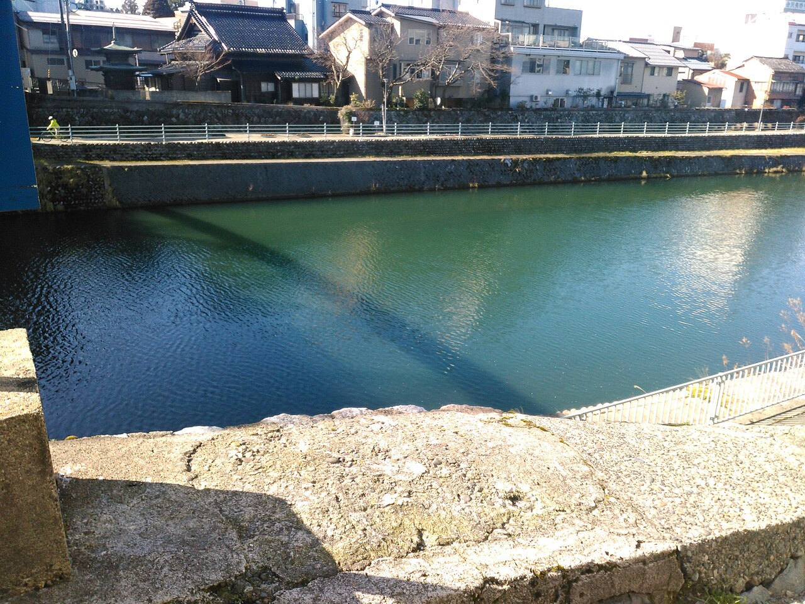
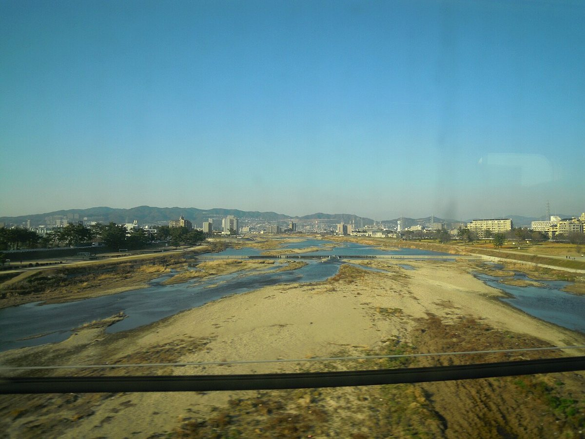
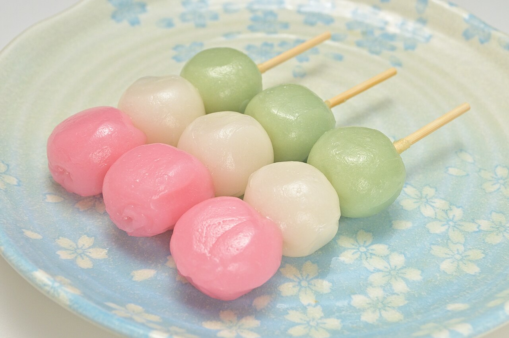
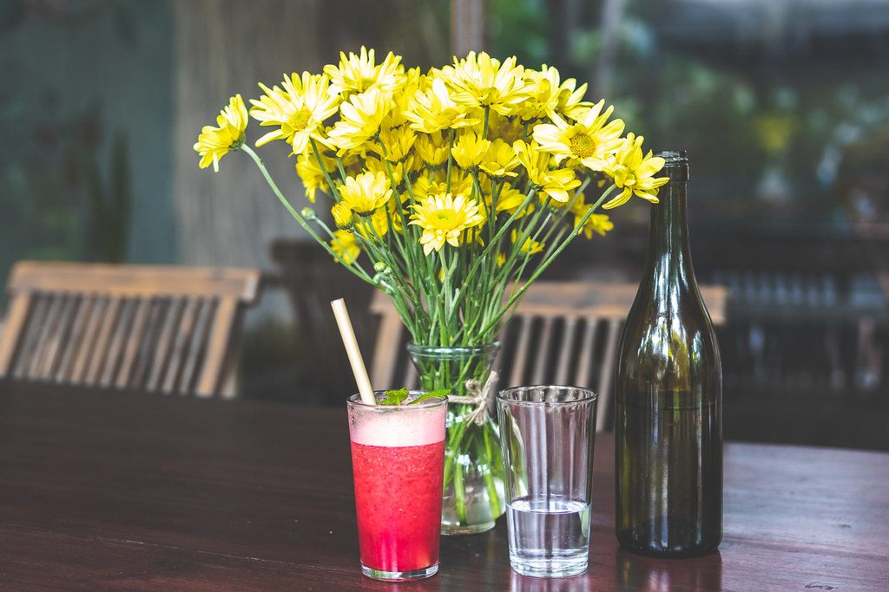
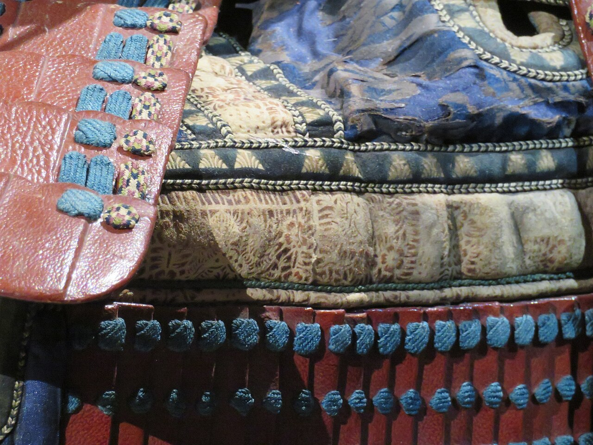

ABOUT
「川の眺めがいい」の一言から
店主の島内さんは、1853年創業と伝わる「島内呉服店」の店主でもあります。お店を現在の松原の地に構えたあと、着物を見にいらしたお客さまから「松原川の眺めがいい」と言われたことが、喫茶室を始めるきっかけになったそうです。
建物は2003年に佐賀市の都市景観賞を受賞。高い天井と、川に面した窓の波打つようなガラスが、少し夢の中のような空気をつくっています。店内には絵や本、ピアノやギターなど、店主の好みが並びます。
出典: 佐賀新聞「まちなかリポート」(saga-s.co.jp/articles/-/1773471)、かわら版(kawaraban-web.com/14143/)ほか。

- ギャラリーとしても写真展・絵画展・演劇・ライブなどに貸し出されている空間で、天井高7メートルの吹き抜け、北面は全面ガラス張りと紹介されています。
- 音楽のある店内ピアノを弾きに訪れる方もいると紹介されています。
- 店名について「蝙蝠」の由来は確認できていません。
MENU
和のスイーツと、ひと息の一杯
記事で紹介されているのは、白玉を使った和スイーツや、ジンジャーエールなど。抹茶系のスイーツが人気とのことです。価格・内容は変わることがあるため、ここでは「準備中」とし、詳しくはInstagramをご覧ください。






VOICE
こんなふうに過ごせたら(口コミ イメージ例)
以下は制作側が作った創作のイメージ例で、実在のお客様の声ではありません。
イメージ例
川に面した窓の光がやわらかくて、抹茶のアイスをゆっくり食べているうちに時間を忘れました。
イメージ例
壁に並ぶ絵を眺めながらの一杯が楽しみです。展示が替わるたびに足を運びたくなります。
イメージ例
天井が高くて、音がよく響く空間。ライブの日に聴いた生演奏が心に残っています。
